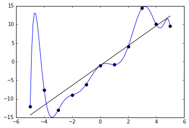
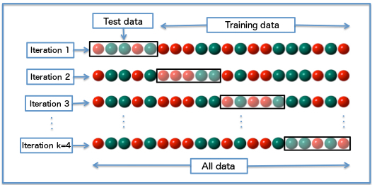
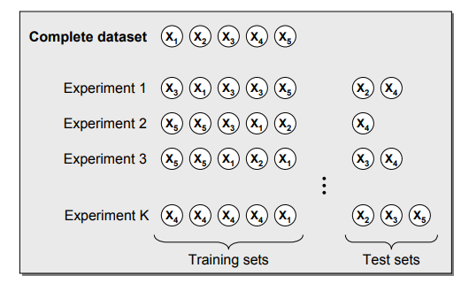
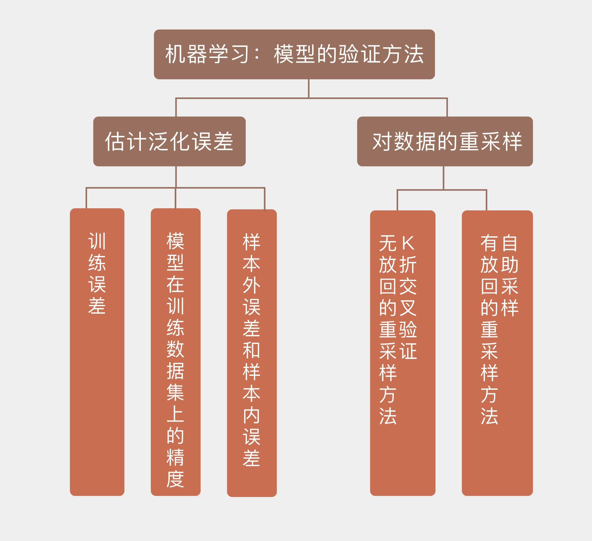

- 00 开篇词 打通修炼机器学习的任督二脉.md.html
- 01 频率视角下的机器学习.md.html
- 02 贝叶斯视角下的机器学习.md.html
- 03 学什么与怎么学.md.html
- 04 计算学习理论.md.html
- 05 模型的分类方式.md.html
- 06 模型的设计准则.md.html
- 07 模型的验证方法.md.html
- 08 模型的评估指标.md.html
- 09 实验设计.md.html
- 10 特征预处理.md.html
- 11 基础线性回归：一元与多元.md.html
- 12 正则化处理：收缩方法与边际化.md.html
- 13 线性降维：主成分的使用.md.html
- 14 非线性降维：流形学习.md.html
- 15 从回归到分类：联系函数与降维.md.html
- 16 建模非正态分布：广义线性模型.md.html
- 17 几何角度看分类：支持向量机.md.html
- 18 从全局到局部：核技巧.md.html
- 19 非参数化的局部模型：K近邻.md.html
- 20 基于距离的学习：聚类与度量学习.md.html
- 21 基函数扩展：属性的非线性化.md.html
- 22 自适应的基函数：神经网络.md.html
- 23 层次化的神经网络：深度学习.md.html
- 24 深度编解码：表示学习.md.html
- 25 基于特征的区域划分：树模型.md.html
- 26 集成化处理：Boosting与Bagging.md.html
- 27 万能模型：梯度提升与随机森林.md.html
- 28 最简单的概率图：朴素贝叶斯.md.html
- 29 有向图模型：贝叶斯网络.md.html
- 30 无向图模型：马尔可夫随机场.md.html
- 31 建模连续分布：高斯网络.md.html
- 32 从有限到无限：高斯过程.md.html
- 33 序列化建模：隐马尔可夫模型.md.html
- 34 连续序列化模型：线性动态系统.md.html
- 35 精确推断：变量消除及其拓展.md.html
- 36 确定近似推断：变分贝叶斯.md.html
- 37 随机近似推断：MCMC.md.html
- 38 完备数据下的参数学习：有向图与无向图.md.html
- 39 隐变量下的参数学习：EM方法与混合模型.md.html
- 40 结构学习：基于约束与基于评分.md.html
- 如何成为机器学习工程师？.md.html
- 总结课 机器学习的模型体系.md.html
- 总结课 贝叶斯学习的模型体系.md.html
- 结课 终有一天，你将为今天的付出骄傲.md.html
- 捐赠
07 模型的验证方法
模型本身及其背后学习方法的泛化性能（generalization performance），也就是模型对未知数据的预测能力，是机器学习的核心问题。可在一个问题的学习中，往往会出现不同的模型在训练集上具有类似的性能，这时就需要利用模型验证来从这些备选中做出选择。
由于模型的泛化性能和它的复杂度是直接挂钩的，所以模型验证的任务就是确定模型的复杂度以避免过拟合的发生。原则上说，模型验证应该使用专门的验证数据集。可是当数据集的容量较小，不足以划分成三个部分时，验证集和测试集就可以合二为一，共同来完成对模型的选择和评价。
估计泛化性能时，最重要的依据就是模型在训练数据集上的精度（accuracy）。定性而论，模型在训练集上的精度不能太低。由于模型的拟合和评价都是在相同的训练集上完成的，因此用训练误差去估计测试误差，得到的必然是过于乐观的结果。如果在训练集上都达不到较高的精度的话，模型本身的假设就很可能存在问题（比如用线性模型来建模平方关系的数据），从而导致较大的偏差，这样的模型很难指望它在真实数据上具有良好的表现。
可另一方面，训练数据集上的正确率也不是“低低益善”，因为过低的正确率往往是欠拟合的征兆。训练数据集中的数据量一定是有限的，这些数据共同构成了高维空间上一个点集。只要模型的参数足够多，形式足够复杂，就必定可以构造出经过所有数据点的曲线或者曲面，在训练集上得到100%的正确率。显然，这样的模型对训练数据的拟合能力过强，不可能具备良好的泛化特性。

过拟合现象（图片来自维基百科）
上图就是一个典型的过拟合例子：黑点代表的离散数据可以看成是满足线性关系的原始数据和随机噪声的叠加，受噪声的影响，即使是生成数据的直线也不能完全拟合数据，总归存在一定的残留误差。如果要将残留误差降低为0，在训练集上取得100%的正确率，得到的拟合结果就是龙飞凤舞的蓝色曲线。虽然这个多项式模型完美地覆盖了所有数据点，但它所代表的数据生成方式显然和黑色直线并不接近。此时，过高的训练集正确率反而与对模型优良泛化性能的追求背道而驰。
既然训练误差太高了不行，太低了也不行，那么究竟到什么程度才算合适呢？关于训练误差和泛化误差的关系，《统计学习基础》（Elements of Statistical Learning）从理论上给出了略显晦涩的解释。在这里我尝试加以解读。
分析的出发点是误差的分解理论：误差包括噪声、偏差和方差三部分。当模型的训练过程结束后，在训练集上就可以计算出模型\(\\hat f\)的训练误差，在测试集上则可以计算出模型的泛化误差。由于训练数据是已知的，验证数据是未知的，两者之间并不存在交集，所以泛化误差也被称为样本外误差（extra-sample error）。
可随后，作者们又引入了一个新的概念，叫样本内误差（in-sample error），这个概念的核心在于刻画噪声的影响。训练集的数据中既包含由潜在的概率分布所决定的确定部分，也包含受噪声干扰产生的随机部分。在训练过程中，模型\(\\hat f\)将不可避免地把噪声的一部分随机特性也纳入建模的范畴。如果考虑噪声的影响，那么即使当训练数据的自变量不变，它的因变量也会受发生变化。从这个角度来理解，训练数据集就是一个样本，它对应的总体是自变量固定时因变量所有可能的取值。利用样本训练出的模型\(\\hat f\)在样本上的表现和在总体上的表现之间的差值，就是所谓的样本内误差。
看到这里你可能发现了，这个样本内误差纯粹是统计学家想象出来的概念。但好在经过一番处理之后，对测试误差的估计可以转化成对样本内误差的估计，让这个概念终于找到了它能够发光发热的场景。进一步简化的话，由于训练误差是已知的，所以对样本内误差的估计又可以转化成对它和训练误差之间的差值的估计，这个差值在《统计学习基础》中被称为乐观度（optimism）。
对于线性模型等特殊形式的模型，乐观度可以以解析式来表示，并且直接取决于模型中参数的数目，这时就可以根据赤池信息量准则（Akaike Information Criterion, AIC）或者贝叶斯信息量准则（Bayesian Information Criterion, BIC）来指导模型选择。说白了，在这个理论框架下，模型选择就是计算有效参数的数目。
上面的理论估计虽然严谨，却也太过复杂。在工程上处理误差时哪里需要这喋喋不休的推导，直接用数据模拟就什么都出来了。更通用的验证方法是直接估计样本外误差，估计的手段则是数据的重采样（re-sampling），充分利用有限的数据来估算模型的泛化性能，这也是实际应用中的惯常技巧。
模型在验证集上的性能是模型选择和评估的依据。无论使用什么样的重采样策略，验证集都需要满足一个基本要求，就是不能和训练集有交集。模型本身就是在训练集上拟合出来的，如果再用相同的数据去验证的话，这种既当运动员又当裁判员的做法就缺乏说服力了。所以在划分时，最基本的原则就是确保训练集、验证集和测试集三者两两互不相交。
除了互不相交之外，另一个需要注意的问题是训练/验证/测试中样例分布的一致性，也就是三个集合中正例和负例的比例应该大致一致，避免在数据集之间出现不平衡。如果训练集和验证集中的样例分布相差较大，这种分布差异将不可避免地给性能的估计带来偏差，从而模型选择造成影响。
做老师的都知道，一次考试中的学生成绩应该是近似满足正态分布的，所以在评估教学效果时，学生样本的构成就至关重要：如果选的都是成绩较好的学生，那他们在自习室自学的效果可能还比上课更好；如果选的都是成绩较差的学生，那即使老师再苦口婆心掰开揉碎也可能白费功夫。这两种情况的共同特点就是都不能真实反映教学质量。只有当学生样本的构成也是两头尖中间宽的纺锤形时，评估的结果才能忠实于实际情况，具有参考价值。
想要充分利用有限的数据，必须在训练集和验证集的划分方式，或者说验证数据的抽取方式上做些门道。最简单直接的方法就是随机采样出一部分数据作为训练集，再采样出另一部分作为验证集，这种方法就是留出法（hold-out）。如果机器学习过程不使用验证步骤，那么这种划分方式就相当于拿出大部分数据做训练，剩下的全部留做测试，这也是“留出”这个名称的含义。
留出法的一个问题是它所留出的、用于模型验证的数据是固定不变的。即使在满足分布一致性的条件下，训练集和验证集的划分方式也并不是唯一的。把所有ID为奇数的数据作为训练集和把所有ID为偶数的数据作为训练集，进行模型评估的结果肯定有所区别。通过留出法计算出来的泛化误差本质上也是个随机变量，单次留出得到的估计结果就相当于对这个分布进行一次采样，这单次采样的结果没办法体现出随机变量的分布特性。正因如此，在使用留出法时一般采用多次随机划分，在不同的训练/验证集上评估模型性能再取平均值的方式，以此来得到关于泛化误差更加精确的估计。
将留出法的思想稍做推广，就可以得到常用的\(k\)折交叉验证法（\(k\)-fold cross validation）。\(k\)折交叉验证将原始数据集随机划分为\(k\)个相同大小的子集，并进行\(k\)轮验证。每一轮验证都选择一个子集作为验证集，而将剩余的\(k-1\)个子样本用作训练集。由于每一轮中选择的验证集都互不相同，每一轮验证得到的结果也是不同的，\(k\)个结果的均值就是对泛化性能的最终估计值。

>\(k\)折交叉验证示意图（\(k = 4\)）（图片来自维基百科）
\(k\)折交叉验证中\(k\)值的选取直接决定估计结果的精确程度。较小的\(k\)值意味着更少的数据被用于训练模型，这将导致每一轮估计得到的结果更加集中，但都会偏离真正的泛化误差，也就是方差较小而偏差较大。随着\(k\)的不断增加，越来越多的数据被用在模型拟合上，计算出的泛化误差也会越来越接近真实值。但由于训练数据的相似度越来越高，训练出来的模型也就越来越像，这就会导致在不同的验证集上产生较大的方差。
\(k\)折交叉验证一个特例是\(k\)等于原始数据集的容量\(N\)，此时每一轮中只有一个样本被用做测试，不同轮次中的训练集则几乎完全一致。这个特例被称为留一法（leave-one-out）。留一法得到的是关于真实泛化误差的近似无偏的估计，其结果通常被认为较为准确。但它的缺点是需要训练的模型数量和原始数据集的样本容量是相等的，当数据量较大时，使用留一法无疑会带来庞大的计算开销。
除了\(k\)折交叉验证之外，另一种模型验证的方法是自助采样（bootstrap）。在学习概率论时你肯定计算过这样的问题：一个袋子里有红球若干白球若干，从中抽出一个球查看颜色后放回或不放回，再次抽出一个红球/白球的概率是多少。前面提到的\(k\)折交叉验证执行的就是典型的不放回的重采样，在同一轮验证中某个样本要么出现在训练集，要么出现在验证集，两者必居其一。
相比之下，自助采样执行的则是有放回的重采样。如果使用自助采样生成训练集的话，需要每次随机从原始数据集中随机抽取一个样本并拷贝到训练集中，将这个样本放回到原始数据集，再重复以上的步骤。这种放回重采样的方式会导致某些数据可能在同一轮验证中多次出现在训练集内，而另一些数据可能从头到尾都没有参与到模型的训练当中。在每一轮次的自助采样中，没有被采到的样本会作为测试数据使用。

自助采样原理示意图（图片来自https://dzone.com/articles/machine-learning-validation-techniques）
模型验证是模型原型设计的最后完善。一旦完成了模型验证，模型就不能再做调整了。这就像对陶土模型做出最后的修饰定型，至于入窑烧制的效果如何就完全听天由命，出来的成品品相不佳就只能狠心摔碎。同样的道理，即使验证之后的模型在测试集上的表现再差，也只能打掉牙往肚子里咽。若非要调整不可，就只能重启炉灶了。
今天我和你分享了模型验证的实现思路和具体方法，其要点如下：
模型验证的作用是选择最佳模型并确定其性能；
对数据的重采样可以直接实现对样本外误差，也就是泛化误差的估计；
\(k\)折交叉验证是无放回的重采样方法；
自助采样是有放回的重采样方法。
在机器学习中，参数（parameter）和超参数（hyperparameter）是两个不同的概念。模型的参数是对模型的内部描述，超参数则是对模型的外部描述。对于多项式模型\(f(x) = \\sum\\limits_{i = 0}^N \\alpha_i x^i\)来说，所有的\(\\alpha_i\)都是需要拟合的参数，而多项式的最高次数\(N\)则是超参数。模型的验证实际上就是通过调整模型超参数来控制模型复杂度，从而找到一组预测能力最强的模型参数。
关于参数和超参数之间的关系，你可以查阅相关的文献，并在这里留下你的理解。

© 2019 - 2023 Liangliang Lee. Powered by gin and hexo-theme-book.